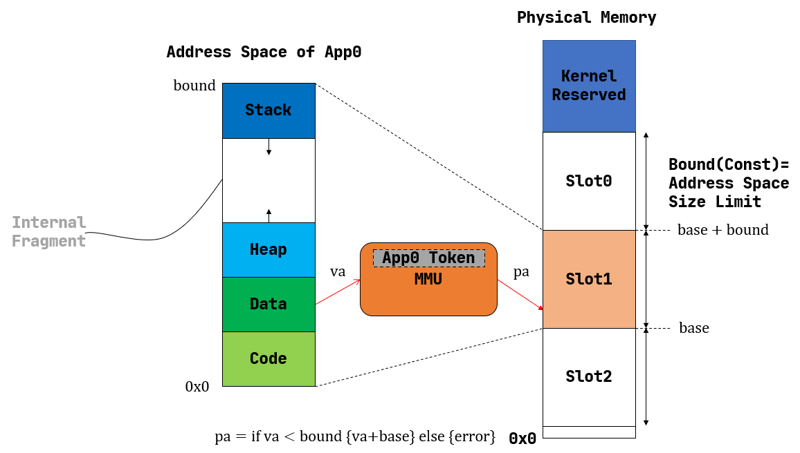
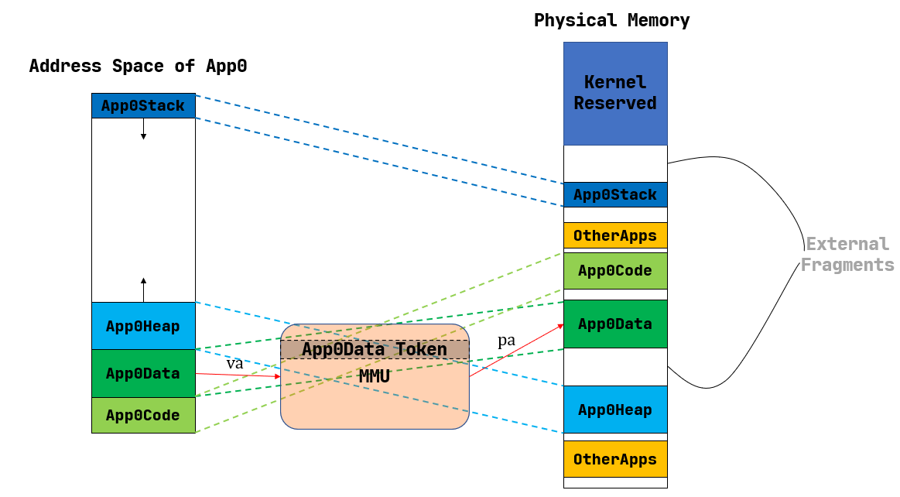

地址空间¶
本节我们来介绍内核在访存方面为应用提供的一层抽象接口——地址空间，并结合操作系统的发展历程回顾该接口的实现策略 是如何变化的。
地址空间与虚拟地址¶
我们之前介绍过，在最早整套硬件资源只用来执行单个裸机应用的时候，并不存在真正意义上的操作系统，而只能算是一种应用 函数库。那个时候，物理内存的一部分用来保存函数库的代码和数据，余下的部分都交给应用来使用。从功能上可以将应用 占据的内存分成几个段：代码段、全局数据段、堆和栈等。当然，由于就只有这一个应用，它想如何调整布局都是它自己的 事情。从内存使用的角度来看，批处理系统和裸机应用很相似：批处理系统的每个应用也都是独占内核之外的全部内存空间， 只不过当一个应用出错或退出之后，它所占据的内存区域会被清空，而序列中的下一个应用将自己的代码和数据放置进来。 这个时期，内核提供给应用的访存视角是一致的，因为它们确实会在运行过程中始终独占一块固定的内存区域，每个应用开发者 都基于这一认知来规划程序的内存布局。
后来，为了降低等待 I/O 带来的无意义的 CPU 资源损耗，多道程序出现了。而为了提升用户的交互式体验，提高生产力，分时 多任务系统诞生了。它们的特点在于：应用开始多出了一种“暂停”状态，这可能来源于它主动 yield 交出 CPU 资源，或是在 执行了足够长时间之后被内核强制性换出。当应用处于暂停状态的时候，它驻留在内存中的代码、数据该何去何从呢？曾经有一种 做法是每个应用仍然和在批处理系统中一样独占内核之外的整块内存，当暂停的时候，内核负责将它的代码、数据保存在磁盘或 硬盘中，然后把即将换入的应用保存在磁盘上的代码、数据恢复到内存，这些都做完之后才能开始执行新的应用。
不过，由于这种做法需要大量读写内存和外部存储设备，而它们的速度都比 CPU 慢上几个数量级，这导致任务切换的开销过大， 甚至完全不能接受。既然如此，就只能像我们在第三章中的做法一样，限制每个应用的最大可用内存空间小于物理内存的容量，这样 就可以同时把多个应用的数据驻留在内存中。在任务切换的时候只需完成任务上下文保存与恢复即可，这只是在内存的帮助下保存、 恢复少量通用寄存器，甚至无需访问外存，这从很大程度上降低了任务切换的开销。
在本章的引言中介绍过第三章的做法有哪些问题。对于应用来说，它需要自己决定会被加载到哪个物理地址运行，直接访问真实的 物理内存，这需要开发者对于硬件的特性和使用方法有更多了解，产生额外的学习成本，也会为应用的开发和调试带来不便。从 内核的角度来看，将直接访问物理内存的权力下放到应用会使得它难以对应用的访存行为进行有效管理，已有的特权级机制亦无法 阻止很多来自应用的恶意行为。
为了解决这种困境，抽象仍然是最重要的指导思想。在这里，抽象意味着内核要负责将物理内存管理起来，并为上面的应用提供 一层抽象接口，从之前的失败经验学习，这层抽象需要达成下面的设计目标：
透明 ：应用开发者可以不必了解底层真实物理内存的硬件细节，且在非必要时也不必关心内核的实现策略， 最小化他们的心智负担；
高效 ：这层抽象至少在大多数情况下不应带来过大的额外开销；
安全 ：这层抽象应该有效检测并阻止应用读写其他应用或内核的代码、数据等一系列恶意行为。
最终，到目前为止仍被内核广泛使用的抽象被称为 地址空间 (Address Space) 。某种程度上讲，可以将它看成一块 巨大无比但并不真实存在的内存。在每个应用的视角里，它自己独占一个地址空间，因此它可以随意规划自己的内存布局，它的 各个段也就可以分别放置在地址空间中它希望的位置。应用同样可以使用一个地址作为索引来读写自己地址空间的数据，就像用物理地址 作为索引来读写物理内存上的数据一样。这种地址被称为 虚拟地址 (Virtual Address) 。
从此，应用能够直接看到并访问的就只有地址空间，且它的任何一次访存使用的都是虚拟地址，无论取指令来执行还是读写 栈、堆或是全局数据段都是如此。事实上，特权级机制被拓展，使得应用不再具有通过物理地址直接访问物理内存的能力。
由于每个应用独占一个地址空间，里面只含有自己的各个段，于是它可以随意规划 各个段的分布而无需考虑和其他应用冲突；同时，它完全无法窃取或者破坏其他应用的数据，毕竟那些段在其他应用的地址空间 内，鉴于应用只能通过虚拟地址读写它自己的地址空间，这是它没有能力去访问的。这样看来这个抽象有一定安全性，并为系统 提供了部分稳定性。

我们知道应用的数据终归还是存在物理内存中的，那么物理内存是如何被抽象为地址空间的呢？这需要硬件和软件双方的配合来实现。
如上图所示，当应用取指或者执行 一条访存指令的时候，它都是在以虚拟地址为索引读写自己的地址空间。此时，CPU 中的 内存管理单元 (MMU, Memory Management Unit) 自动将这个虚拟地址进行 地址转换 (Address Translation) 变为一个物理地址， 也就是物理内存上这个应用的数据真实被存放的位置。也就是说，在 MMU 的帮助下，应用对自己地址空间的读写才能被实际转化为 对于物理内存的访问。
事实上，每个应用的地址空间都可以看成一个从虚拟地址到物理地址的映射。可以想象对于不同的应用来说，该映射可能是不同的， 即 MMU 可能会将来自不同两个应用地址空间的相同虚拟地址翻译成不同的物理地址。要做到这一点，就需要硬件提供一些寄存器 ，软件可以对它进行设置来控制 MMU 按照哪个应用的地址空间进行地址转换。于是，将应用的数据放到物理内存并进行管理，而 在任务切换的时候需要将控制 MMU 选用哪个应用的地址空间进行映射的那些寄存器也一并进行切换，则是作为软件部分的内核需 要完成的工作。
回过头来，在介绍内核对于 CPU 资源的抽象——时分复用的时候，我们曾经提到它为应用制造了一种每个应用独占整个 CPU 的 幻象，而隐藏了多个应用分时共享 CPU 的实质。而地址空间也是如此，应用只需、也只能看到它独占整个地址空间的幻象，而 藏在背后的实质仍然是多个应用共享内存，它们的数据分别存放在内存的不同位置。
地址空间只是一层抽象接口，它有很多种具体的实现策略。对于不同的实现策略来说，内核如何规划应用数据放在物理内存的位置， 而 MMU 又如何进行地址转换也都是不同的。下面我们简要介绍几种曾经被使用的策略，并探讨它们的优劣。
分段内存管理¶
曾经的一种做法如上图所示：每个应用的地址空间大小限制为一个固定的常数 bound ，也即每个应用的可用虚拟地址区间
均为 \([0,\text{bound})\) 。随后，就可以以这个大小为单位，将物理内存除了内核预留空间之外的部分划分为若干
个大小相同的 插槽 (Slot) ，每个应用的所有数据都被内核放置在其中一个插槽中，对应于物理内存上的一段连续物理地址
区间，假设其起始物理地址为 \(\text{base}\) ，则由于二者大小相同，这个区间实际为
\([\text{base},\text{base}+\text{bound})\) 。因此地址转换很容易完成，只需检查一下虚拟地址不超过地址空间
的大小限制（此时需要借助特权级机制通过异常来进行处理），然后做一个线性映射，将虚拟地址加上 \(\text{base}\)
就得到了数据实际所在的物理地址。
可以看出，这种实现极其简单：MMU 只需要 \(\text{base,bound}\) 两个寄存器，在地址转换进行比较或加法运算即可； 而内核只需要在任务切换的同时切换 \(\text{base}\) 寄存器（由于 \(\text{bound}\) 是一个常数），内存 管理方面它只需考虑一组插槽的占用状态，可以用一个 位图 (Bitmap) 来表示，随着应用的新增和退出对应置位或清空。
然而，它的问题在于：浪费的内存资源过多。注意到应用地址空间预留了一部分，它是用来让栈得以向低地址增长，同时允许堆 往高地址增长（支持应用运行时进行动态内存分配）。每个应用的情况都不同，内核只能按照在它能力范围之内的消耗内存最多 的应用的情况来统一指定地址空间的大小，而其他内存需求较低的应用根本无法充分利用内核给他们分配的这部分空间。 但这部分空间又是一个完整的插槽的一部分，也不能再交给其他应用使用。这种在地址空间内部无法被充分利用的空间被称为 内碎片 (Internal Fragment) ，它限制了系统同时共存的应用数目。如果应用的需求足够多样化，那么内核无论如何设置 应用地址空间的大小限制也不能得到满意的结果。这就是固定参数的弊端：虽然实现简单，但不够灵活。
为了解决这个问题，一种分段管理的策略开始被使用，如下图所示：
注意到内核开始以更细的粒度，也就是应用地址空间中的一个逻辑段作为单位来安排应用的数据在物理内存中的布局。对于每个 段来说，从它在某个应用地址空间中的虚拟地址到它被实际存放在内存中的物理地址中间都要经过一个不同的线性映射，于是 MMU 需要用一对不同的 \(\text{base/bound}\) 进行区分。这里由于每个段的大小都是不同的，我们也不再能仅仅 使用一个 \(\text{bound}\) 进行简化。当任务切换的时候，这些对寄存器也需要被切换。
简单起见，我们这里忽略一些不必要的细节。比如应用在以虚拟地址为索引访问地址空间的时候，它如何知道该地址属于哪个段， 从而硬件可以使用正确的一对 \(\text{base/bound}\) 寄存器进行合法性检查和完成实际的地址转换。这里只关注 分段管理是否解决了内碎片带来的内存浪费问题。注意到每个段都只会在内存中占据一块与它实际所用到的大小相等的空间。堆 的情况可能比较特殊，它的大小可能会在运行时增长，但是那需要应用通过系统调用向内核请求。也就是说这是一种按需分配，而 不再是内核在开始时就给每个应用分配一大块很可能用不完的内存。
尽管内碎片被消除了，但内存浪费问题并没有完全解决。这是因为每个段的大小都是不同的（它们可能来自不同的应用，功能 也不同），内核就需要使用更加通用、也更加复杂的连续内存分配算法来进行内存管理，而不能像之前的插槽那样以一个比特 为单位。顾名思义，连续内存分配算法就是每次需要分配一块连续内存来存放一个段的数据。 随着一段时间的分配和回收，物理内存还剩下一些可用的连续块，其中有一些只是很小的间隙，它们自己已经无法被 用于分配，被称为 外碎片 (External Fragment) 。
如果这时再想分配一个比较大的块或者越过间隙增长一个段的大小， 就需要将这些外碎片“拼起来”。然而这是一件开销很大的事情，这需要移动一些已有的段在物理内存上的位置让它们 连续分布，从而它们中间的间隙就可以被释放出来用于分配。这个过程同样涉及到极大的内存读写开销。如果连续内存分配算法 选取得当，可以尽可能减少这种操作。课上所讲到的那些算法，包括 first-fit/worst-fit/best-fit 或是 buddy system，其具体表现取决于实际的应用需求，各有优劣。那么，分段内存管理带来的外碎片和连续内存分配算法比较复杂的 问题可否被解决呢？
分页内存管理¶
哈哈。